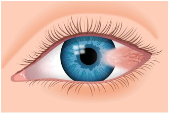
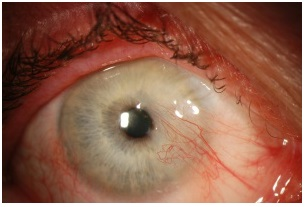
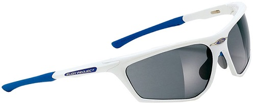

A pterygium (tuh-RIJ-ee-uhm) is an elevated, wedged-shaped bump on the eyeball that starts on the white of the eye (sclera) and can invade the cornea. If you have more than one of these eye growths, the plural form of the word is pterygia (tuh-RIJ-ee-ah).
Though it's commonly called "surfer's eye," you don't have to be a surfer or ever see the ocean to get a pterygium. But being in bright sunlight for long hours — especially when you are on water, which reflects the sun's harmful UV rays — increases your risk.
Pterygia are benign (non-cancerous) growths, but they can permanently disfigure the eye. They also can cause discomfort and blurry vision.
Although ultraviolet radiation from the sun appears to be the primary cause for the development and growth of pterygia, dust and wind are sometimes implicated too, as is dry eye disease.
Pterygia usually develop in 30- to 50-year-olds, and these bumps on the eyeball rarely are seen in children. Having light skin and light eyes may put you at increased risk of getting a pterygium.


If a pterygium becomes inflamed and affects the cornea, excision (pterygium surgery) may be
necessary.
Pterygia usually occur on the side of the eye closer to the nose, but they can also develop on the side closer to the ear as well and can affect one eye or both eyes.
Many people with mild surfer's eye may not experience symptoms or require treatment. But large or growing pterygia often cause a gritty, itchy or burning sensation or the feeling something is "in" the eye (called a foreign body sensation). Also, these pterygia often become inflamed, causing unattractive red eyes.
If a pterygium significantly invades the cornea, it can distort the shape of the front surface of the eye, causing astigmatism and higher-order aberrations that affect vision. Sometimes people confuse pterygia with eye growths called pingueculae, but they are different.
Treatment of surfer's eye depends on the size of the pterygium, whether it is growing and the symptoms it causes. Regardless of severity, pterygia should be monitored to prevent scarring that could lead to vision loss.
If a pterygium is small, your eye doctor may prescribe lubricants or a mild steroid eye drop to reduce swelling and redness. Contact lenses are sometimes used to cover the growth, protecting it from some of the effects of dryness or potentially from further UV exposure. Topical cyclosporine also may be prescribed for dry eye.
If pterygium surgery is required, several surgical techniques are available. Your ophthalmologistwho performs the procedure will determine the best technique for your specific needs.
Pterygium excision may be performed either in a room at the doctor's office or in an operating room. It's important to note that pterygium removal can induce astigmatism, especially in people who already have astigmatism.
Surgery for pterygium removal usually lasts no longer than 30 minutes, after which you likely will need to wear an eye patch for protection for a day or two. You should be able to return to work or normal activities the next day.
Unfortunately, pterygia often return after surgical removal, possibly due to oxidative stress and/or continued UV exposure.
Some studies show recurrence rates up to 40 percent, while others have reported recurrence rates as low as 5 percent. Some research even shows higher rates of recurrence in those who have pterygia removed during the summer months, potentially because of their increased exposure to sunlight.

Exposure to ultraviolet light from the sun is a suspected cause of pterygia; wrap sunglasses will
protect your eyes from all angles. These Zyon sailing sunglasses by Rudy Project come with removable
side wings for even more eye protection.
To prevent regrowth after a pterygium is surgically removed, your eye surgeon may suture or glue a piece of surface eye tissue onto the affected area. This method, called autologous conjunctival autografting, has been shown to safely and effectively reduce the risk of pterygium recurrence.
A drug that can help limit abnormal tissue growth and scarring during wound healing, such as mitomycin C, also may be applied topically at the time of surgery and/or afterward to reduce the risk of pterygium recurrence.
After removal of the pterygium, the doctor will likely prescribe steroid eye drops for several weeks to decrease swelling and prevent regrowth. In addition to using your drops, it's very important to protect your eyes from the sun with UV-blocking sunglasses after surgery, since exposure to ultraviolet radiation may be a key factor in pterygium recurrence.